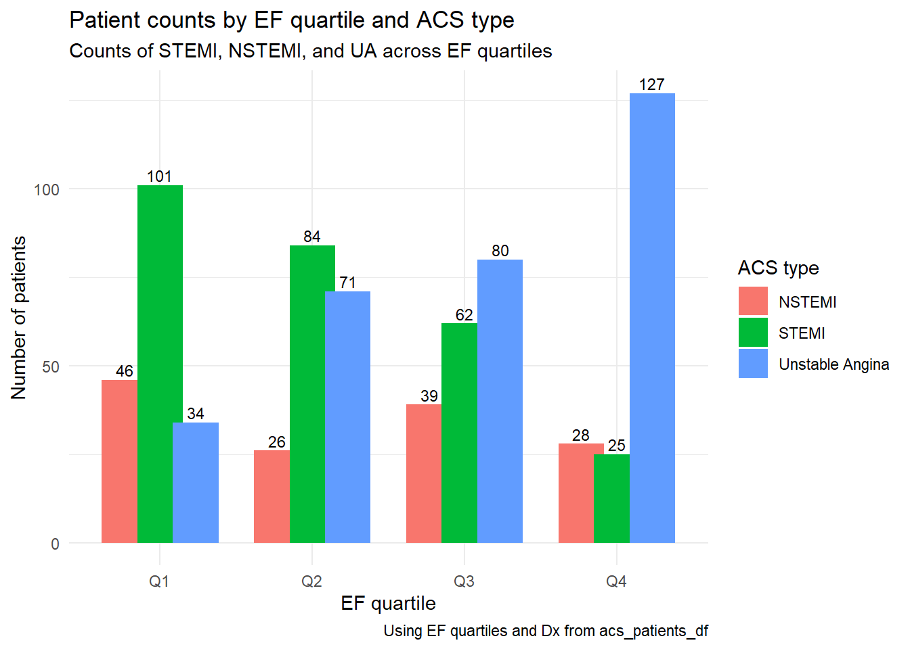
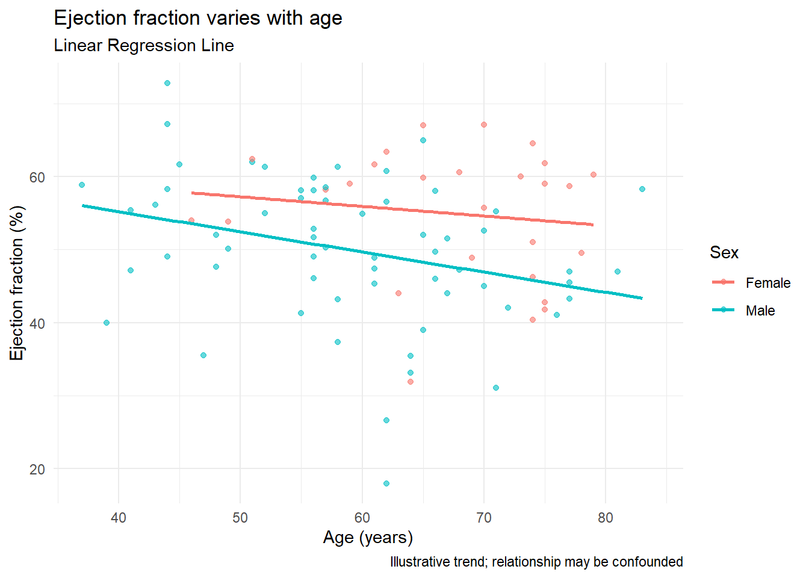

library(tidyverse)
library(CardioDataSets)Example analysis
dictionary
What are we analyzing?
This analysis examines how age, sex, and diagnosis type (STEMI, NSTEMI, or unstable angina) relate to ejection fraction (EF) among patients with acute coronary syndrome (ACS). It summarizes EF distributions across subgroups and visualizes patterns in age and diagnosis using tidyverse tools to provide a concise, reproducible example of clinical exploratory data analysis.
Intended audience. This analysis is designed for students, clinicians, and early-career researchers who are learning how to apply tidyverse tools to explore clinical datasets. It may also be useful for MPH and data science learners interested in seeing how exploratory data analysis (EDA) can reveal patterns in patient characteristics, such as age, sex, and ejection fraction, within an acute coronary syndrome (ACS) cohort.
Data source. We use acs_patients_df from the CardioDataSets R package.
Package home: https://CRAN.R-project.org/package=CardioDataSets
Dataset reference: CardioDataSets::acs_patients_df.
Variable
Below is the list of variable names and type.
# the raw data
raw <- CardioDataSets::acs_patients_df
# quick glance
skim_tbl <- tibble(
variable = names(raw),
type = vapply(raw, \(x) class(x)[1], character(1)))
knitr::kable(skim_tbl, caption = "Variables for acs_patients_df ")| variable | type |
|---|---|
| age | integer |
| sex | character |
| cardiogenicShock | character |
| entry | character |
| Dx | character |
| EF | numeric |
| height | numeric |
| weight | numeric |
| BMI | numeric |
| obesity | character |
| TC | numeric |
| LDLC | integer |
| HDLC | integer |
| TG | integer |
| DM | character |
| HBP | character |
| smoking | character |
TL;DR This page explores patterns in an acute‑coronary‑syndrome (ACS) cohort.
Data wrangling
In this analysis, I used dplyr functions including mutate(), summarise(), group_by(), and ntile() to create new variables, compute summary statistics, and group the data, and the tidyr function drop_na() to remove rows with missing values.
std <- raw %>%
drop_na(age, sex, EF) %>%
mutate(
EF_q = ntile(EF, 4),
EF_q = factor(
EF_q,
labels = c("Q1", "Q2", "Q3", "Q4")))
summaries <- list(
overall = std %>%
summarise(
n = n(),
mean_age = mean(age, na.rm = TRUE),
median_EF = median(EF, na.rm = TRUE)
),
ef_by_sex = std %>%
group_by(sex, EF_q) %>%
summarise(
n = n(),
mean_EF = mean(EF, na.rm = TRUE),
.groups = "drop"))
knitr::kable(summaries$overall, caption = "Overall cohort snapshot (by EF)")| n | mean_age | median_EF |
|---|---|---|
| 723 | 63.13416 | 58.1 |
knitr::kable(summaries$ef_by_sex, caption = "EF Quartiles by Sex")| sex | EF_q | n | mean_EF |
|---|---|---|---|
| Female | Q1 | 55 | 41.01636 |
| Female | Q2 | 47 | 54.63404 |
| Female | Q3 | 68 | 60.34412 |
| Female | Q4 | 70 | 65.40857 |
| Male | Q1 | 126 | 42.70714 |
| Male | Q2 | 134 | 55.28881 |
| Male | Q3 | 113 | 60.08584 |
| Male | Q4 | 110 | 66.21000 |
The overall cohort consists of 723 patients with a mean age of 63 years and a median ejection fraction (EF) of 58.1%. When stratified by EF quartiles and sex, females and males have similar EF distributions, with the lowest quartile around 41–43% and the highest quartile around 65–66%. The distribution shows slightly more males in the lower quartiles, but overall, EF appears fairly balanced between sexes.
Plot 1: Age distribution by EF status (faceted by sex)
NoteNote
All analyses in this page are exploratory and focus on visualization and data wrangling rather than hypothesis testing. The goal is to illustrate tidyverse workflows using a clinical dataset.
plt_age <- std %>%
ggplot(aes(x = age, fill = Dx)) + # use Dx instead of stemi
geom_density(alpha = 0.4) +
facet_wrap(~ sex, nrow = 1) +
labs(
title = "Age distributions by ACS diagnosis",
subtitle = "Faceted by sex; kernel density smooths highlight shifts",
x = "Age (years)", y = "Density",
fill = "Diagnosis",
caption = "Example analysis using acs_patients_df"
) +
theme_minimal()
plt_age
Plot 2: ACS diagnosis across EF quartiles
Compute mortality rates and display a grouped column chart.
by_EF <- std %>%
group_by(Dx, EF_q) %>%
summarise(n = n(), .groups = "drop") %>%
arrange(Dx, EF_q)
# Bar plot
plt_EF <- ggplot(by_EF, aes(x = EF_q, y = n, fill = Dx)) +
geom_col(position = position_dodge(width = 0.7)) +
geom_text(aes(label = n),
position = position_dodge(width = 0.7),
vjust = -0.3, size = 3) +
labs(
title = "Patient counts by EF quartile and ACS type",
subtitle = "Counts of STEMI, NSTEMI, and UA across EF quartiles",
x = "EF quartile", y = "Number of patients",
fill = "ACS type",
caption = "Using EF quartiles and Dx from acs_patients_df"
) +
theme_minimal()
plt_EF
ImportantInterpretation Reminder
Findings shown here describe associations, not causation. Differences by sex, age, or diagnosis type may reflect underlying clinical or demographic factors not accounted for in this exploratory analysis.
Plot 3: Ejection fraction vs age
plt_EF_age <- raw %>%
filter(Dx == "STEMI", DM == "Yes") %>%
ggplot(aes(x = age, y = EF, color = sex)) +
geom_point(alpha = 0.6) +
geom_smooth(method = "lm", se = FALSE) +
labs(
title = "Ejection fraction varies with age",
subtitle = "Linear Regression Line",
x = "Age (years)", y = "Ejection fraction (%)",
color = "Sex",
caption = "Illustrative trend; relationship may be confounded"
) +
theme_minimal()
plt_EF_age`geom_smooth()` using formula = 'y ~ x'Warning: Removed 7 rows containing non-finite outside the scale range
(`stat_smooth()`).Warning: Removed 7 rows containing missing values or values outside the scale range
(`geom_point()`).
Below is a Wikimedia Commons heart anatomy illustration, included to contextualize ACS pathophysiology:

A tiny tidy risk‑factor table (long format demo)
risk_tbl <- raw %>%
select(sex, Dx, DM, smoking) %>%
mutate(
DM = DM == "Yes",
smoking = smoking %in% c("Smoker", "Ex-smoker")
) %>%
pivot_longer(cols = c(DM, smoking), names_to = "risk", values_to = "present") %>%
group_by(sex, Dx, risk) %>%
summarise(
`Risk factor prevalence (%)` = round(mean(present, na.rm = TRUE) * 100, 1),
n = n(),
.groups = "drop")
knitr::kable(risk_tbl, caption = "Share of patients with selected risk factors by sex and STEMI status")| sex | Dx | risk | Risk factor prevalence (%) | n |
|---|---|---|---|---|
| Female | NSTEMI | DM | 50.0 | 50 |
| Female | NSTEMI | smoking | 26.0 | 50 |
| Female | STEMI | DM | 35.7 | 84 |
| Female | STEMI | smoking | 32.1 | 84 |
| Female | Unstable Angina | DM | 38.6 | 153 |
| Female | Unstable Angina | smoking | 24.8 | 153 |
| Male | NSTEMI | DM | 31.1 | 103 |
| Male | NSTEMI | smoking | 87.4 | 103 |
| Male | STEMI | DM | 30.0 | 220 |
| Male | STEMI | smoking | 81.8 | 220 |
| Male | Unstable Angina | DM | 37.2 | 247 |
| Male | Unstable Angina | smoking | 71.7 | 247 |
Quick summary:
Explores how age, sex, and diagnosis type relate to ejection fraction (EF) in ACS patients, using tidyverse tools for reproducible data visualization.
Methods & references (inline cites)
We rely on the tidyverse grammar for wrangling and plotting Wickham and Grolemund (2019) Wickham (2016) and use a curated cardiology dataset Rossi (2025).
Summary
This exploratory analysis of patients with acute coronary syndrome (ACS) showed that most patients were between 55 and 75 years old, with similar age distributions across diagnosis types. Ejection fraction (EF) tended to be slightly lower among males and those with STEMI compared to other subgroups. A mild negative trend between EF and age was observed, more evident among males. Smoking was notably more prevalent among men, while diabetes rates were comparable between sexes. Overall, the findings illustrate demographic and clinical variation within ACS subgroups and demonstrate the utility of tidyverse tools for clear, reproducible data exploration.
Functions used
dplyr:
rename(),mutate(),summarise(),group_by(),arrange(),select(),across(),ntile(),filter()tidyr:
drop_na(),pivot_longer()ggplot2:
geom_density(),geom_col(),geom_point(),geom_smooth(),facet_wrap()
References
Rossi, Renzo Caceres. 2025. “CardioDataSets: A Comprehensive Collection of Cardiovascular and Heart Disease Datasets.” R package version 0.2.0. https://doi.org/10.32614/CRAN.package.CardioDataSets.
Wickham, Hadley. 2016. Ggplot2: Elegant Graphics for Data Analysis. Springer. https://doi.org/10.1007/978-3-319-24277-4.
Wickham, Hadley, and Garrett Grolemund. 2019. R for Data Science. O’Reilly Media. https://r4ds.had.co.nz/.